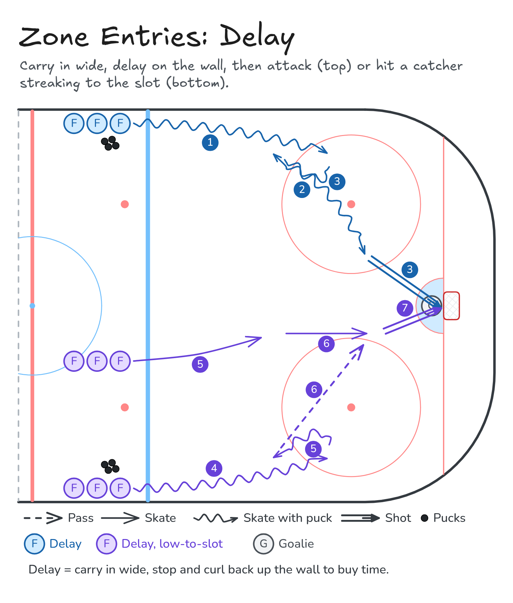

Zone Entries: Delay
Carry in wide, delay on the wall, then attack (top) or hit a catcher streaking to the slot (bottom).
- Zone entry
- Half ice
- Passing
- Shooting
Watch
Diagram

Coaching points
- Carry in wide with speed to push the D back.
- Delay: stop and curl hard with the puck on your forehand, protecting it from the D.
- Head up during the curl: look for the attack lane or the late player.
- Catcher: time your streak so you hit the slot with speed, stick on the ice.
- Pass to the stick in the slot; catch and shoot quickly.
How it runs
- Lines of forwards with pucks at the boards in the neutral zone. For the low-to-slot variation, a catcher line waits in the middle.
- Delay (top): carry in wide over the blue line.
- Stop and curl back up the wall to delay.
- Attack: cut to the slot and shoot.
- Delay, low-to-slot (bottom): carry in wide and delay the same way. The catcher streaks to the net; the carrier passes to the slot and the catcher shoots.
- The other two variations in this progression (delay, low-to-high to the slot; delay, low-to-high to the D) match Low-to-High: Give-and-Go and Low-to-High: D-to-D.